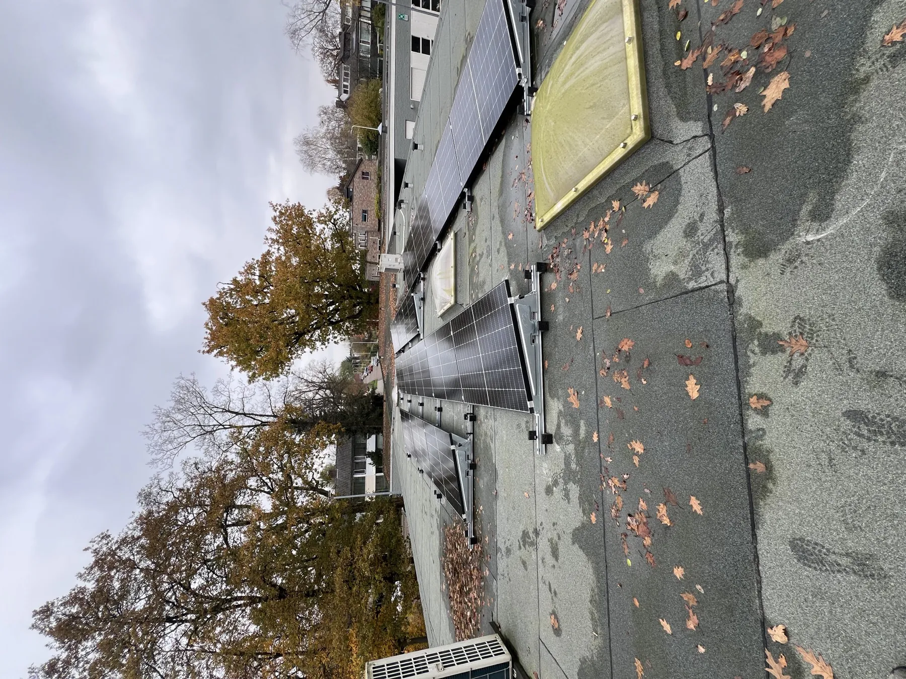
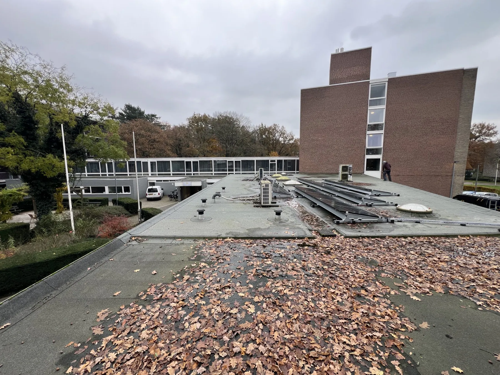
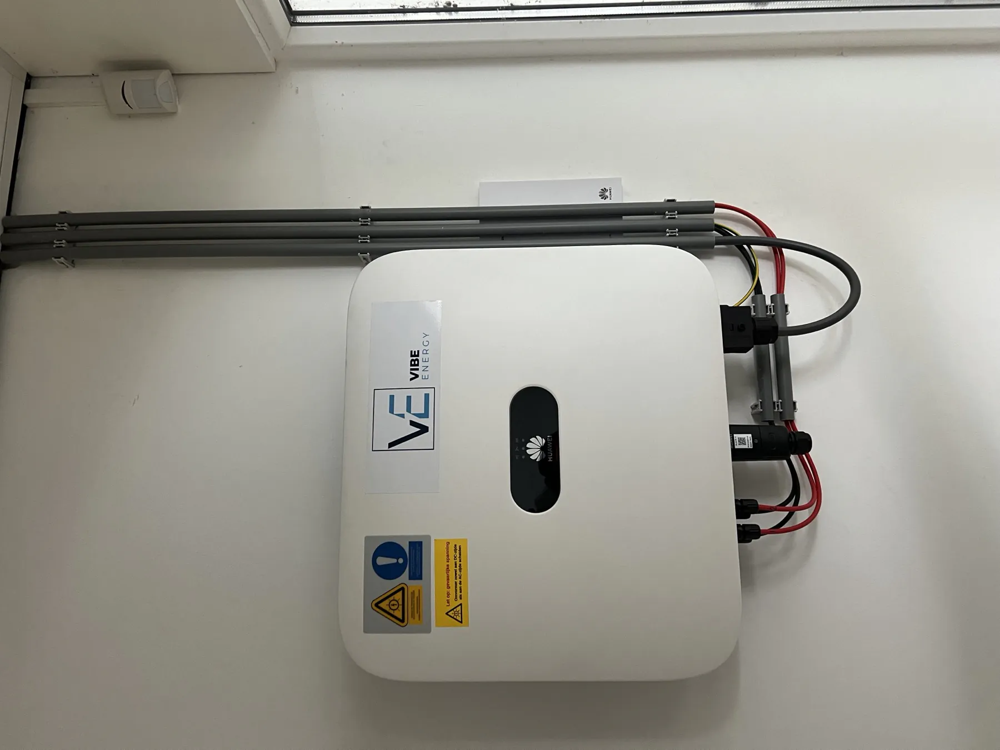

15 panelen, volledig doorgemeten.
Een gebouw aan de Bart Crumstraat 20 in Heelsum, voorzien van vijftien zonnepanelen op het platte dak.
De uitdaging
Het dakvlak aan de Bart Crumstraat 20 in Heelsum was onbenut. De opgave was een compacte installatie die binnen dat dakvlak past.
Wat Vibe deed
Vibe Energy plaatste vijftien zonnepanelen van 450 Wp, samen 6,75 kWp, op een Van der Valk ValkPro+-onderconstructie, aangesloten op één driefasige Huawei-omvormer van 5 kW.
Op locatie
Locatiebeelden en de plaatsing van de installatie.



Het systeem op deze locatie.
15 zonnepanelen
Panelen van 450 Wp, samen 6,75 kWp.
Huawei 5 kW, driefasig
Eén omvormer voor de volledige installatie.
ValkPro+ onderconstructie
Opstelling op het platte dak.
En wie stuurt het aan?
De onderdelen hierboven leveren het vermogen; VIBE.CONTROL bepaalt per moment waar het heen gaat. Op deze locatie bewaakt de regelaar de grens van de aansluiting, geeft hij eigen opwek voorrang boven inkoop en wijkt optimalisatie altijd voor de bedrijfsvoering.
Na de oplevering blijft Vibe die strategie bijstellen. Een installatie die niet wordt bijgestuurd, levert na een jaar minder op dan op de dag van ingebruikname.
Over VIBE.CONTROLResultaat
De installatie is in november 2024 opgeleverd. Eindfactuur en uitvoeringsrapport dekken elk cijfer van deze installatie.
Vóór
- Een onbenut plat dakvlak.
- Geen eigen opwek op het gebouw.
Na
- 15 panelen in bedrijf, samen 6,75 kWp.
- Aangesloten op één driefasige omvormer van 5 kW.
Klein dakvlak, volledig benut en volledig doorgemeten.
Vibe Energy · Heelsum, November 2024Hoe dit project tot stand kwam.
Dezelfde vier stappen die wij op elke locatie doorlopen.
Meetdata
Het kwartiersprofiel van de aansluiting uitlezen, en vastleggen waar de piek zit en welke ruimte onbenut blijft.
Ontwerp
Dimensionering van de onderdelen, de opstelling op het terrein, de veiligheid en de rol die de sturing krijgt.
Realisatie
Plaatsing, netkoppeling en inbedrijfstelling, met één aanspreekpunt van begin tot eind.
Beheer
Monitoring, onderhoud en het bijstellen van de regelstrategie zolang de installatie in bedrijf is.


Een vergelijkbare situatie op uw locatie?
Stuur ons uw verbruiksgegevens en plannen. Wij rekenen door wat er binnen uw bestaande aansluiting mogelijk is.